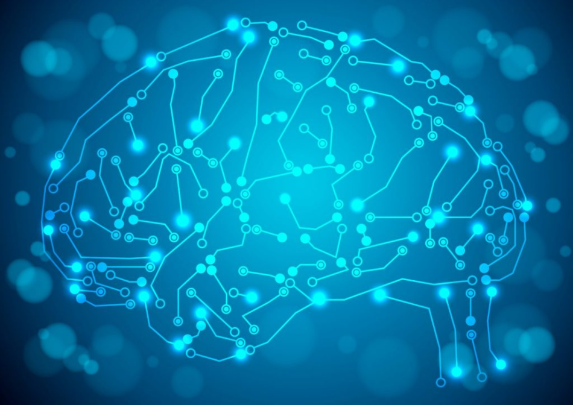

Our Work

Deep Learning
Deep learning (also known as deep structured learning or differential programming) is part of a broader family of machine learning methods based on artificial neural networks with representation learning.

Machine Learning
Machine Learning is the science of getting computers to learn and act like humans do, and improve their learning over time in autonomous fashion, by feeding them data and information in the form of observations and real-world interactions.

Neural Network
Artificial neural networks(ANN) or connectionist systems are computing systems vaguely inspired by the biological neural networks that constitute animal brains.Such systems "learn" to perform tasks by considering examples, generally without being programmed with task-specific rules.